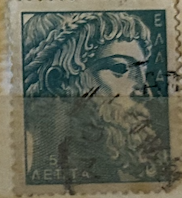
| SOURCE | TITLE| IMAGE MATCH | click to source page |
| Colnect | Stamp: Zeus of Istiaea (Greece(Ancient Greek Art (III)) Mi:GR 691,Sn:GR 634,Yt:GR 670,Sg:GR 736a,AFA:GR 709,Kar:GR 807,Un:GR 670 📮 | 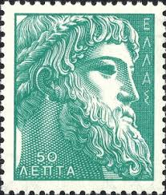 |
| Alamy | Ancient greek ruler hi-res stock photography and images - Alamy | 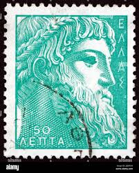 |
| eBay | Ancient Art III MNH 1958 - 1960 Pericles, Zeus, Alexander the Great, Charioteer | eBay | 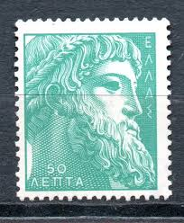 |
| Osta | Kreeka templiga mark - Iidne Kreeka kunst 1955 Zeus (222237297) - Osta.ee | 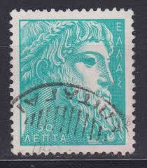 |
| Alamy | GREECE - 1958: A stamp printed in Greece, shows the Zeus of Istiaea Stock Photo - Alamy | 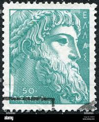 |
| stu1967 | 1955 50L ANCIENT GREEK ART FINE USED | 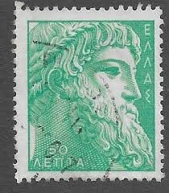 |
| Мешок | Греция = 50 лепт 1959 год = Зевс = водяной знак (торги завершены #341805006) | 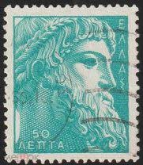 |
| Etsy | Green Zeus Stamp Art Print: Ancient Greek Philately Poster - Etsy Canada | 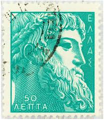 |
| Redbubble | Greek God Green Vintage Postage Stamp" Poster for Sale by red-amber65 | Redbubble | 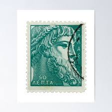 |
| Todocolección | grecia & marcofilia, campesinos de tesalia, lau - Buy Antique stamps of Greece on todocoleccion | 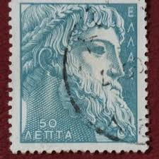 |
| Shutterstock | Greece Circa 1959 Post Stamp Printed Stock Photo 473399152 | Shutterstock | 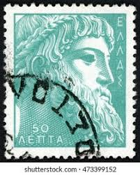 |
| iStock | Greek Postage Stamps Stock Photo - Download Image Now - Greece, Greek Culture, Postage Stamp - iStock | 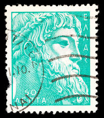 |
| Dreamstime.com | Culture, Greece, Harp, History, Nation Blue Business Logo and Business Card Template. Front and Back Design Editorial Photo - Illustration of greece, performance: 148721161 | 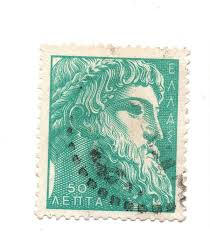 |
| Shutterstock | Greece Circa 1954 Stamp Printed Greece Stock Photo 178657952 | Shutterstock | 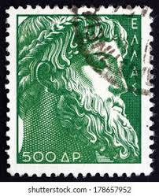 |
| Colnect | Stamp: Zeus of Istiaea (Greece(Ancient Greek Art (II)) Mi:GR 626,Sn:GR 576,Yt:GR 612,Sg:GR 736,AFA:GR 644,Kar:GR 749,Un:GR 612 📮 | 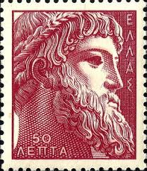 |
| Shutterstock | 10+ Thousand Stamp Greece Royalty-Free Images, Stock Photos & Pictures | Shutterstock | 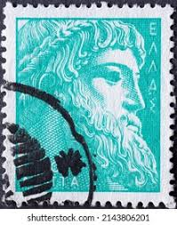 |
| Delcampe | Search in the "Used stamps" category | Delcampe | 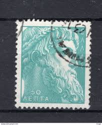 |
| Alamy | MOSCOW, RUSSIA - MARCH 26, 2023: Postage stamp printed in Greece shows Zeus of Istiaea, Ancient Greek Art (I) serie, circa 1954 Stock Photo - Alamy | 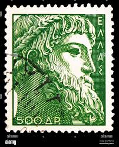 |
| Alamy | Greek postage stamp hi-res stock photography and images - Page 8 - Alamy | 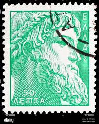 |
| Alamy | GREECE - CIRCA 1959: a stamp printed in Greece shows Apollo and Labyrinth, Ancient Greek Coin, circa 1959 Stock Photo - Alamy | 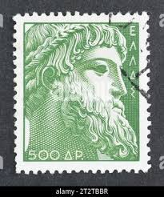 |
| WordPress.com | The Four Seasons – Archaeology Study Unit | 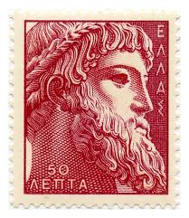 |
| Shutterstock | 9+ Hundred Hellenic Letter Royalty-Free Images, Stock Photos & Pictures | Shutterstock | 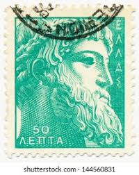 |
| iStock | Russia Vintage Postage Stamp Empress Catherine Ii Stock Photo - Download Image Now - iStock | 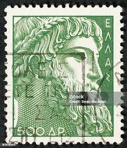 |
| Pixabay | Page 3 - 6,000+ Free Greek God Zeus & Greek Images - Pixabay | 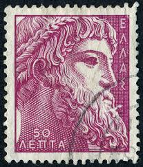 |
| Film Goes with Net | Record of Ragnarok' Announces First-Ever Exhibition at Tokyo's Postal Museum, Featuring Original Art From Season 3 - Film Goes with Net | 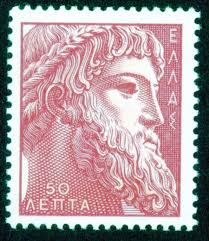 |
| eBay | Greece Postage Stamp Used | eBay | 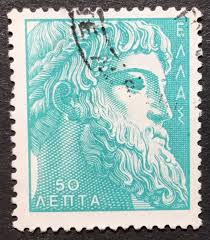 |
| Aukro | Grecko 1981 Mi 1471 ine raz. | Aukro | 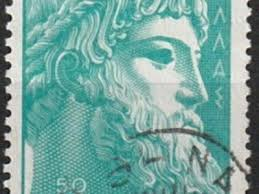 |
| iStock | Greek Stamp Shows God Zeus Statue Stock Photo - Download Image Now - 1954, Ancient, Antiquities - iStock | 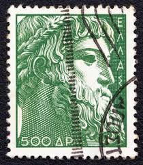 |
| Alamy | Cancelled postage stamp printed by Greece, that shows The Antikythera Mechanism, circa 2006 Stock Photo - Alamy | 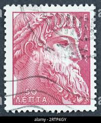 |
| eBay | Greece. Ancient Art II MNH 1955, Ox-head Zeus Alexander the Great Homer Pericles | eBay | 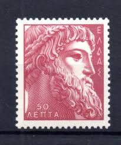 |
| 收藏网 | 店铺交易-交易-收藏网 | 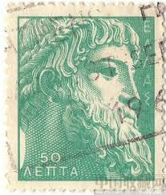 |
| beautiful stamp Greece Hellas 50 Dr (Zeus, Euboia; Kap Artemision auf Euböa; greek mythology, Εύβοια) postage bollo francobolli timbre γραμματόσημα Ελλάδα 希腊 邮票 yóupiào Xīlà Греция марка stamp Hellas Greece postage poste | 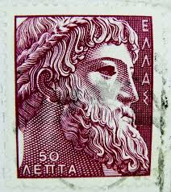 | |
| eva-rest.com | eva new | 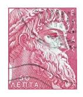 |
| znaczenie-imion.pl | Herosi greccy imiona Kto to Kim byli Lista 2024 Mitologia | 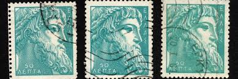 |
| Etsy | Green Zeus Stamp Art Print: Ancient Greek Philately Poster - Etsy Israel | 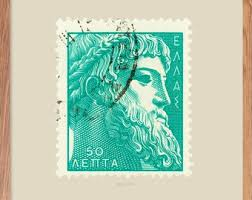 |
| iStock | Homer Stamp Stock Photo - Download Image Now - Greece, Postage Stamp, Classical Greek - iStock | 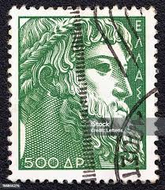 |
| Etsy | グリーンゼウス切手アートプリント：古代ギリシャ切手収集ポスター - Etsy 日本 | 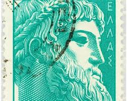 |
| eBay UK | Used set of 3 stamps " ANCIENT GREEK ART II - ZEUS OF ISTIAEA " GREECE 1955 | eBay UK | 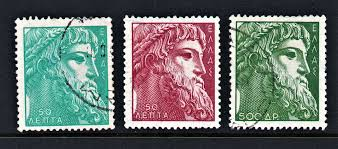 |
| Dreamstime.com | Ancient Zeus Palace and Acropolis in Athens, Greece Editorial Image - Image of front, alabaster: 69205195 | 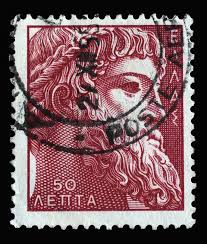 |
| FreeImages | Photo de stock de Timbre Grec – Images libres de droits | FreeImages | 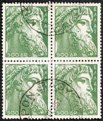 |
| iStock | Greek Postage Stamps Stock Photo - Download Image Now - Above, Antique, Black Background - iStock | 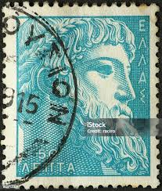 |
| iStock | Stock fotografie Řecké Poštovní Známky – stáhnout obrázek nyní - Poštovní známka, Řecko, Řecká kultura - iStock | 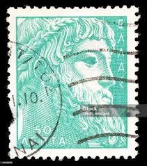 |
| eBay | Greece- 1955 -Greek Stamp /Ancient Arts/ New Colors / Used | eBay | 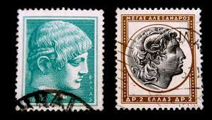 |
| Alamy | GREECE - CIRCA 1955: a stamp printed in the Greece shows Voyage of Dionysus, God of the Grape Harvest, Winemaking and Wine, Ancient Greek Religion, ci Stock Photo - Alamy | 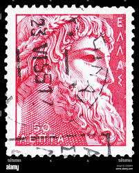 |
| eBay | COLOR PRINTED GREECE [KINGDOM] 1945-1973 STAMP ALBUM PAGES (66 illustr. pages) | eBay | 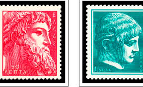 |
| Amazon.ca | Greece 624-631 (Complete.Issue.) unmounted Mint/Never hinged ** MNH 1955 Antique Greek Art (Stamps for Collectors) Sculptures, Printing & Stamping - Amazon Canada | 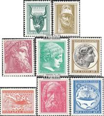 |
| Todocolección | 1981: europa (c.e.p.t.) 1981 - folklore (usado) - Buy Antique stamps of Greece on todocoleccion | 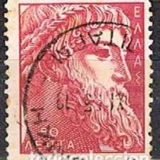 |
| eBay | Greece- 1953 -Greek Stamp /Ancient Arts / Used | eBay | 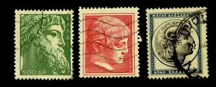 |
| 60 Old stamps ideas | old stamps, stamp collecting, post stamp | 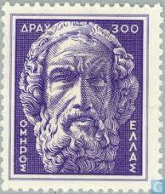 | |
| Shutterstock | 12 Greece Currency 1970 Royalty-Free Images, Stock Photos & Pictures | Shutterstock | |
| iStock | Zeus From The Obverse Side Of 1000 One Thousand Greek Drachmas Drachmai Banknote Currency Issued 1970 In Greece Stock Photo - Download Image Now - iStock | |
| iStock | Greek Postage Stamp Stock Photo - Download Image Now - Antique, Black Background, Black Color - iStock | |
| Pin by PillarBoxStudio on Greece Stamps | Postage stamp art, Commemorative stamps, Old stamps | ||
| eBay | Greece 1982 #1422 Europa Issue - VF Mint no Gum | eBay | |
| Free stamp catalogue | Stamps from Greece - Freestampcatalogue.com - The free online stampcatalogue with over 500.000 stamps listed. | |
| Etsy | Greece Philately - Etsy Ireland | |
| Alamy | Illustration of neptune or poseidon god of the sea holding trident viewed from front set inside circle on isolated background done in retro black and Stock Photo - Alamy | |
| stampandpost.com | Art - Stamp and Post | |
| Blogger.com | Stamp Art: 2014-07-20 |